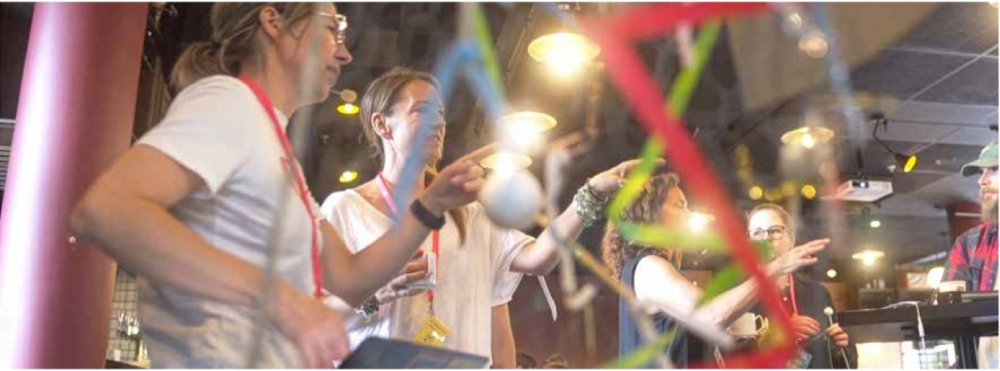
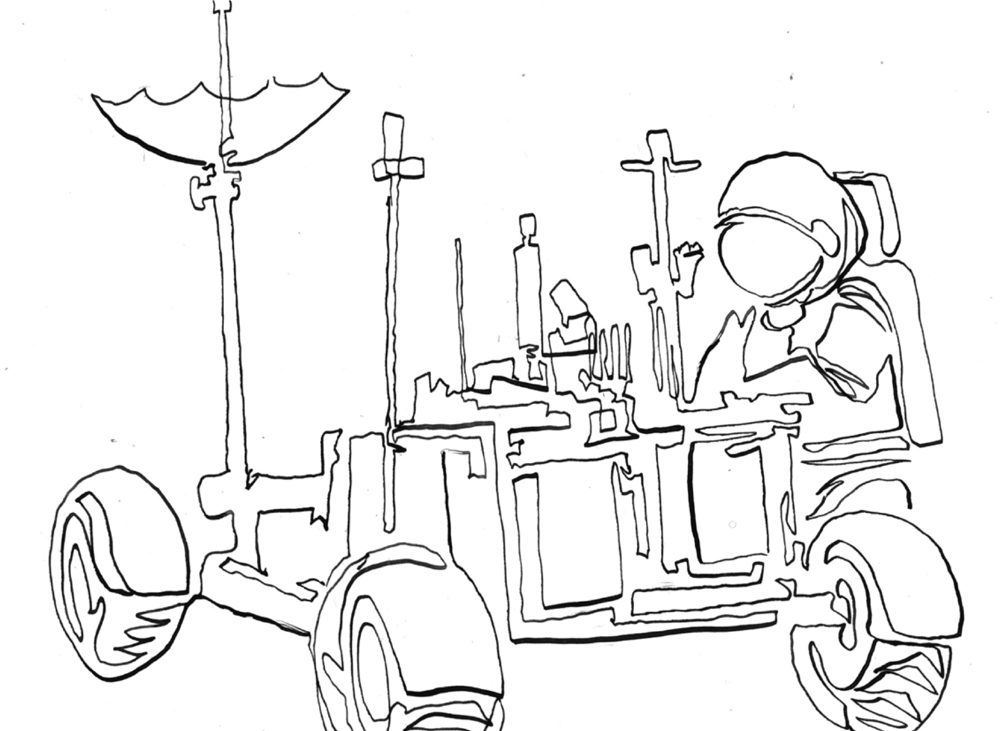

När vi hör ordet lek tänker många fortfarande på barn. Vi associerar det till sandlådor, kurragömma och fantasilekar. Men leken är inte bara en aktivitet för barn – den är en grundläggande mänsklig drivkraft, lika viktig i vuxen ålder som i barndomen. Lek är inte ett avbrott från lärande. Den är lärande.
Forskningen om lek visar gång på gång att den inte är en lyx eller ett “extra inslag”, utan en förutsättning för utveckling, kreativitet och samarbete. Redan på 1930-talet beskrev Lev Vygotskij leken som barnets viktigaste arena för att träna sociala roller, regler och språk (Vygotsky, 1933/1967).
Moderna forskare som Stuart Brown menar att lek är lika avgörande för vuxna – att den skapar flexibilitet, stärker relationer och öppnar för kreativitet i arbete och vardag (Brown, 2009). Neurobiologen Sergio Pellis har visat att lek aktiverar de delar av hjärnan som formar vår förmåga att improvisera och anpassa oss i nya situationer (Pellis & Pellis, 2009).
Lek är på allvar
Att leka är inte att slösa tid. Det är att träna på verkligheten, men utan att riskerna blir för höga. Lek är därför en av de mest effektiva formerna av lärande. När vi leker vågar vi prova, misslyckas och testa igen – precis det som kännetecknar både barns lärande och framgångsrik innovation hos vuxna. Som antropologen Gregory Bateson redan på 1970-talet visade, är lek ett ramverk där vi kan utforska “som om” – och därigenom utveckla förmågan att skilja mellan verklighet, fantasi och möjligheter (Bateson, 1955/1972).
I våra samtal med forskare och praktiker har vi sett hur lek återkommer som en gemensam nämnare. Entreprenören Mikael Ahlström i vårt projekt beskriver hur små vardagsmoment i coworking-miljöer kan designas för att väcka lekfullhet: slumpade samtalsfrågor vid kaffemaskinen, micro-övningar i fredagsfrukosten, eller experimentella moment i workshops. Det är inte stora projekt som behövs – utan små lekfulla inslag som gör att människor vågar släppa garden och tänka nytt.
“Lust är inte någonting som bara uppstår. Idéer är ingenting man bara får. Det kräver väldesignade processer som skapar engagemang och nyfikenhet,” säger Mikael. Hans erfarenheter visar att lekfullhet inte är någon motsats till professionalism, utan en designfråga i syfte att skapa engagemang.
Lek, osäkerhet och nyfikenhet
Forskaren Daniel Sörman beskriver hur lekfulla moment i workshops kan fungera som “mini-labb” för lärande. När ett problem uppstår i arbetslivet kan teamet behandla det som en lekfull utmaning: “Vad händer om vi provar detta? Vad händer om vi gör tvärtom?” På så sätt skapas samma typ av nyfiken drivkraft som i barns lek – en vilja att utforska för utforskandets skull, snarare än för att någon kräver ett snabbt svar.
Professor Jessica Körning Ljungberg berättar att hon ser liknande effekter hos studenter. När de får uppgifter som är öppna och lite oförutsägbara, triggas deras intresse. Ett oväntat exempel, en oförutsägbar twist, kan fungera som en lekfull trigger som får hela gruppen att “tända till”. Det är inte alltid de stora experimenten som gör skillnaden – utan just det lilla inslaget av osäkerhet som väcker nyfikenhet.
Forskning bekräftar detta. George Loewenstein (1994) beskrev nyfikenhet som ett “gap” mellan vad vi vet och vad vi vill veta – ett gap som ofta väcks genom små störningar i det vi förväntar oss. Lek kan ses som ett sätt att medvetet skapa och förstärka dessa gap.
Lek och trygghet
För att lek ska fungera behövs också trygghet. Psykologisk trygghet är den ram som gör det möjligt att leka utan rädsla för att förlora ansiktet. Forskaren Elisabeth Åström betonar i sitt arbete att reflektion och gemensamma ramar kan skapa just den trygghet som gör att människor vågar leka med idéer, ställa frågor och testa nytt.
Vi har sett samma saker i olika kontexter under vårt arbete med detta projekt. När självreflektion fått ske i grupp och man givit varandra mandat att pröva, har lärandet blivit djupare. Vi har verkligen fått påminna oss om att lek inte alltid är lätt för vuxna – många associerar det till att “bli oseriös”. Men när kollegor får uppleva en lekfull reflektion tillsammans, blir effekterna tydliga, fler röster kommer fram, fler idéer delas, fler misslyckanden omvandlas till lärdomar.
Lek som organisationsstrategi
På en organisatorisk nivå kan lek ses som en strategi för innovation. Företag som bygger in lekfulla inslag i sitt arbete ser ofta större kreativitet och högre engagemang. Googles berömda “20 procent-regel”, där medarbetare får ägna en del av sin tid åt egna projekt, lärande och lärande, bygger på samma princip: lekfullt utforskande kan leda till stora genombrott.
I utbildning kan lek fungera på samma sätt. När elever får möjlighet att pröva, experimentera och skapa utan rädsla för att göra fel, ökar både motivationen och kunskapsnivån. Studier visar att elever som engageras i lekfulla aktiviteter inte bara lär sig snabbare – de minns också längre (Fisher et al., 2013).

Play to play – en nödvändighet
Lek är alltså inte en “barnslig” syssla vid sidan av. Den är central för allt lärande, från barns första utforskande av världen till vuxnas mest avancerade problemlösning. Den tränar oss i att hantera osäkerhet, bygga relationer, testa nya idéer och hitta glädjen i själva processen.
När vi designar lärande – i skola, arbetsliv eller samhälle – måste vi därför ge leken en självklar plats. Inte som underhållning, utan som motor. I en tid av algoritmer, krav på effektivitet och snabba svar, kan lek framstå som en lyx. I själva verket är det tvärtom: leken är en överlevnadsstrategi.
Att leka är att lära. Att leka är att våga, att lära och kanske också - att kunna skapa trygghet i en osäker omvärld och framtid..
Intervju med Björn Flintberg
Björn Flintberg – spel, lek och lärande
Björn Flintberg är forskare, författare och expert inom digitalisering och spelbaserat lärande, med särskilt fokus på hur lek och spel kan användas som drivkraft för lärande, innovation och samhällsutveckling. Han har en bakgrund både inom akademin och spelindustrin och är en av Sveriges mest engagerade röster för att förstå spel som kultur och som pedagogiskt verktyg. Genom sitt arbete på RISE har han utforskat hur mekanismerna i spel – motivation, återkoppling och meningsskapande – kan tillämpas i utbildning och arbetsliv. Flintberg betonar att lek inte är motsatsen till allvar, utan en nödvändig form för mänskligt utforskande och kreativitet. I hans perspektiv handlar framtidens lärande om att skapa miljöer där människor vågar testa, misslyckas och prova igen – precis som i ett spel.
Björn har varit en central röst i frågor om livslångt lärande och spelbaserade metoder under hela sin tid på RISE. I snart ett decennium har han arbetat med frågorna och idag är han även doktorand inom Entreprenörskap & Innovation vid Luleå tekniska universitet (LTU). På avdelningen Prototypande samhälle på RISE ligger hans fokus på att utforska nya vägar för lärande och samhällsutveckling. Men spel är inte bara hans eget huvudsakliga fält, utan även något han ser som en nyckel för att förstå vad som motiverar människor att utvecklas.
Forskningen kring motivation visar att människor drivs av tre grundläggande psykologiska behov.
Det första handlar om autonomi – att kunna påverka sina val och uppleva handlingsfrihet i det man gör.
Det andra är kompetens – känslan av att klara av utmaningar och utveckla de färdigheter som behövs för att lyckas.
Och det tredje är samhörighet – att känna sig del av ett sammanhang och få dela erfarenheter tillsammans med andra.
När dessa tre behov tillgodoses stärks den inre motivationen, vilket i sin tur påverkar både lärande och välbefinnande positivt (Deci & Ryan, 1985; 2000.).
När Björn berättar om sin bakgrund blir det tydligt att spel alltid har varit mer än bara underhållning i hans värld. Spel är såväl språk som strukturer som kan tillämpas på vitt skilda områden – från industriella processer till sociala sammanhang.
– Spel är inte bara produkter. De är också en metod för att förstå, träna och utveckla förmågor. Det är lätt att avfärda spel som Candy Crush eller Roblox, men man missar då den underliggande potentialen.
Spel som strukturerad lek
Björn förklarar genast skillnaden mellan spel och det som ofta kallas gamification. Spel är en omslutande upplevelse, med regler och ett ramverk som kräver deltagande för att alls bli till. Gamification däremot innebär att plocka ut vissa element från spel – som poäng, nivåer eller belöningar – och applicera dem på något helt annat. Men upplevelsen blir då inte en spelupplevelse.
– Det är bara som att krydda redan färdig mat. Ett spel däremot kräver deltagarens agens. Det händer inget förrän du själv gör något, och det du gör spelar roll.
Det här kravet på aktivitet är själva kärnan i varför spel är en så stark lärandemetod. Vi minns bäst det vi själva upplevt, jämfört med det vi fått återberättat eller pluggat in. Här kopplar det Björn pratar om till forskning om de grundläggande emotionella systemen i hjärnan, där play identifieras som en biologiskt nedärvd drivkraft – lika grundläggande som rädsla eller ilska (Panksepp, 1998).
Lek och spel är besläktat menar Björn och inget av dem är något man lämnar bakom sig i barndomen, de är bland de mest kraftfulla mekanismerna vi har för lärande, kreativitet och samspel genom hela livet.
– Jag brukar säga att spel egentligen bara är en strukturerad form av lek, de är som kusiner. Leken är friare, men även den har regler och ramar. Hoppa hage, tafatt, datten, kull – alla lekar bär på mönster av samspel, utmaning och feedback. Och det är samma mönster vi kan använda i spel och i lärande.
Även forskningen understryker detta. Vygotskij (1978) beskrev leken som en ”proximal utvecklings zon” där individer kan utforska förmågor bortom sina nuvarande gränser. Winnicott (1971) pekade på leken som det ”potentiella rummet” där människor kan experimentera, skapa och växa i trygghet.
Drivkrafter i spel och lek
Spelens koppling till lärandets drivkrafter blir bara tydligare ju mer man pratar om den. Inre motivation är självklar i spelvärlden, inget sker om du inte själv agerar. Nyfikenhet triggas av ovissheten, du vet inte vad som kommer att hända, även om du spelat samma spel tidigare. Framplockning eller recalling blir en naturlig del av spelandet, där strategier, tidigare misstag och erfarenheter ständigt återkallas och utvecklas. Och psykologisk trygghet uppstår både i det skyddade rummet som spelet utgör – the magic circle (Huizinga, 1955; Zimmerman, 2003) – och genom roller som ger distans i känsliga situationer.
Björn berättar om ett projekt inom sexuell hälsa som kunde upplevas lite känsligt men där ungdomar fick roller att spela för förståelse och lärande. Att vara Ahmed eller Stina istället för sig själv, gjorde det lättare att prata om svåra ämnen. De fick en sköld framför sig. Det var inte sina egna erfarenheter de behövde berätta om, utan rollens.
Den typen av trygghet, kombinerad med lekens logik, gör att deltagarna vågar mer än de annars skulle ha gjort.
Leken som kultur, inte avbrott
Björn ser när han tittar på organisationer en direkt koppling mellan brist på lekfullhet och de strukturella problem många verksamheter har.
– Vi har en ledningsstruktur med rötter i feodalismen och en produktionsstruktur från den industriella revolutionen. Och så förstår vi inte varför vi inte kan anpassa oss snabbt nog.
Prestige och stuprör hindrar oss från att leka, pröva och experimentera tillsammans. Men det är i just det experimenterandet som han menar att lärandet sker.
– Prestige är en riktig baneman för lärande. Den bygger murar och låser oss ute från varandra. Men vi är bäst som grupp, som en organism. Det krävs att vi släpper taget och tillåter lekfullheten. Det är där innovationen börjar.
Här blir lek inte ett “avbrott” i arbetet, utan själva kulturen som gör utveckling möjlig. När arbetsplatser skapar zoner av trygg lek – likt Winnicotts “övergångsområde” – ökar både motivation och kreativitet.
Teknik, förändring och framtid
När vi pratar om teknikskiften blir Björn tydlig, det är inte tekniken i sig som avgör, utan vår förmåga att anpassa oss.
– När ångbåtarna kom var segelmakarna förtvivlade. När läroboken kom sa man: ska lärarna försvinna nu? Internet på 90-talet väckte samma oro. Och nu är det AI som oroar. Men människor anpassar sig genom lek, nyfikenhet och samspel. Det är vår arts styrka.
Han jämför processen med en loop av utforskande: vi leker, testar, misslyckas, justerar – och lär oss. Därför är lek och spel inte bara pedagogiska metoder, utan också nycklar till samhällets överlevnad och utveckling.
Låt människor leka
Lek är alltså inte en distraktion. Den gör motstånd uthärdligt, öppnar för kreativitet och skapar trygghet i det osäkra. När vi leker tränar vi inte bara våra hjärnor, utan vår förmåga att vara flexibla, nyfikna och samarbetsvilliga, egenskaper som är avgörande i en värld som förändras snabbt.
Mot slutet av intervjun sammanfattar Björn sitt medskick:
– Vi måste bygga lärandemiljöer som respekterar människans biologiska drivkrafter: nyfikenhet, lekfullhet och omsorg. Obligatoriska kurser och yttre kontroll kan möjligen skapa lydnad, men inte engagemang. Den riktiga kraften kommer när människor känner att de själva deltar och påverkar. Det gäller i skolan, i arbetslivet och i hela samhället. Vi måste ge människor agens. Låt dem leka, utforska och misslyckas. Då blir lärandet en vana, inte en pålaga.
Playguide – lekens logik i lärandedesign
Skilj på spel och poäng.
Gamification är yta – spel är struktur. Det kräver deltagande, beslut och konsekvenstänk. Designa upplevelser där det som händer beror på vad deltagaren gör.
Gör plats för agens.
Inget lärande sker utan handling. Bygg format där deltagaren måste agera, välja och påverka – inte bara ta emot.
Lek är lärandets modersmål.
Lek och spel är inte barnsliga avbrott utan biologiska mekanismer för utveckling. Låt utforskande, nyfikenhet och misslyckanden bli en del av lärandets rytm.
Skapa trygghet genom roller.
Rollspel och karaktärer kan ge distans i svåra samtal. I det skyddade rummet – the magic circle – vågar människor prova, misslyckas och reflektera.
Bygg bort prestige.
Prestige är lärandets fiende. Skapa miljöer där experimenterande värderas högre än perfektion. Lekfulla organisationer lär sig snabbare.
Gör leken till kultur, inte paus.
Lekfullhet ska inte vara en workshop en gång per år, utan en del av vardagen. En kultur där prövande och samspel är normen gör utveckling möjlig.
Design för loopar, inte linjer.
Precis som i spel: testa, misslyckas, justera, börja om. Lärande är en cykel av återkoppling, inte en rak process.
Låt agens ersätta kontroll.
Obligatoriska kurser kan skapa lydnad – men aldrig engagemang. Ge människor möjlighet att delta, påverka och forma sina egna lärandeupplevelser.
Intervju med Lina Emilsson
Lekfullhet på största allvar
– Lina Emilsson om speldesign, neuroplasticitet och att examinera för lärande
Lina Emilsson är neurobiolog, lektor i speldesign vid Uppsala universitet och passionerad utforskare av hur teknik och design kan stötta människor med neurologiska utmaningar, att leva så bra liv som möjligt. Hennes bana som lärare började klassiskt; stora föreläsningssalar, skriftliga tentor och långa rättningshögar. Men ganska snart blev tomheten tydlig. Lärandet syntes inte i tentasvaren och mötet med studenterna uteblev.
I dag har Lina nästan slutat föreläsa. Undervisningen är interaktiv, examinationerna muntliga och ofta konstruerade tillsammans med studenterna. Hon låter dem designa sina tentor, och finns där för att utmana dem. Det skiftet speglar både hennes syn på lärande och den miljö hon verkar i, nämligen speldesign vid ett ungt, tvärvetenskapligt ämnesområde där gamla tak och traditioner från ett anrikt universitet ändå inte är begränsande.
Varför lekfullhet hör hemma i högre utbildning
Lina konstaterar att motståndet mot ”lek” i professionella sammanhang inte är konstigt, begreppet har länge kopplats till barndomen. Men neurovetenskapen är tydlig, hjärnan är plastisk hela livet. Nya kopplingar bildas när vi stimuleras och vågar befinna oss i ett lekfullt tillstånd som är flexibelt, kreativt, frivilligt och utan prestationspress.
Hon pekar på ett klassiskt forskningsspår där berikade miljöer gav möss fler synaps-potentialer, som är de som utgör förutsättningen för lärande. Översatt till människors liv handlar lekfullhet om tre evolverade funktioner; att lära nytt, att odla relationer och att anpassa sig till nya sammanhang. Alla tre behövs i ett arbetsliv som rör sig snabbare än tidigare, inte minst med generativ AI som påverkar kognitiva uppgifter. Lekfullhet är något av det mest allvarliga vi kan uppleva, menar Lina. Men hon lägger till en viktig brasklapp, tid och plats. Vi ska inte alltid ”leka” eller uppleva lekfullhet. Vuxenlivet rymmer ansvar, leveranser och månadsslut. Designfrågan blir därför central, att kunna öppna och stänga fönster för lekfullhet med precision.
Design för lekfullhet kontra design för spel
När samtalet glider mot ”gamification” nyanserar Lina precis som Björn Flintberg bilden. Speldesign och lekdesign är inte samma sak. Spel är avgränsade världar med mål, regler och val – men också med den magi som uppstår i interaktionen mellan spelare och system. Lekdesign handlar mer om att skapa öppna upplevelser där deltagarna själva medskapar mål och regler, i en miljö som bjuder in olika sätt att vara lekfull på.
Hon lyfter hur speldesign ofta fastnar i yttre belöningar, snabba, effektiva men kortsiktiga. Långsiktigt lärande kräver balans mellan inre driv, mening bortom individen, lagom brådska och tydlig återkoppling. Därför arbetar hon med ”design för lekfullhet” snarare än att lyfta in ett färdigt spel ovanpå undervisning. Formerna anpassas efter vilka människor som faktiskt sitter i rummet.
Ett konkret exempel var när hon gav en klass valfrihet i hur de skulle visa att de läst och förstått kurslitteraturen. En grupp byggde ett Dungeons & Dragons*-scenario som examinations form. Efter spelandet följde en strukturerad dialog där studenterna reflekterade över kopplingarna mellan sitt upplägg och teorin de läst.
”Glädjen till lärandet ökade – och djupet i reflektionen med den.”
Dialogen som bedömning – och processen som kunskap
Generativ AI blev för Lina en oväntad lättnad. Om textproduktion kan ge stöd, ja till och med automatiseras via AI-system, behöver bedömningen flytta från textmassor som ska redovisas - och in i mötet, i resonemanget, till förmågan att pröva idéer och ta andras perspektiv.
“För att bedöma kunskap måste vi prata med studenterna.”
Muntliga tentor och kontinuerliga samtal gör processen synlig och ger utrymme att utmana både studenters och lärares tänkande. Misslyckanden har här en särskild status. Lärande maximeras när vi människor arbetar på gränsen av vad vi klarar av. Det är det tillstånd som ofta kallas flow, när det inte är för svårt men inte heller för lätt, att lyckas. Biologiskt motsvaras det av en signalsubstans-cocktail som öppnar för neuroplasticitet. Nyckeln är en trygg miljö som ändå kan vara krävande och utmanande. Lina beskriver hur det vi kategoriserar som misslyckanden inte bara handlar om att just misslyckas, utan om att inte lyckas fullt ut i en situation där man får göra omtag och där alla känner sig trygga med det. I klassrummet kan hon pressa sina studenter hårt, men de möts tillsammans i det arbetet. När de lämnar rummet vill hon att de ska känna kraft, även om de inte klarat kursen ännu.
”Jag säger sällan att du är underkänd. Jag säger att jag vill träffa dig igen. Jag ger inte upp på dig. Du kan fixa det här.”
Olika vägar in i lekfullhet
Alla leker inte likadant. Lina refererar till lekpersonligheter – den som skämtar, berättaren, utforskaren, den som rör sig, konstnären, samlaren, tävlingsmänniskan eller regissören. Som facilitator behöver man designa miljöer där flera vägar till lärande är legitima. Onboarding behövs för nyfikenhet, för progression som belönar nötning och bemästrande, och inte minst behöver man skapa meningsfulla roller även för ”champions” som redan kan mycket, så att de stannar kvar, fördjupar och fortsätter att lyfta sig själv och andra.
Hon beskriver hur ideella spelgemenskaper utvecklar avancerat ledarskap i praktiken: stora grupper, trollhantering och kulturbyggande. Det är frivilligbaserade tränings arenor där ungas förmåga att leda och samarbeta mognar utan att de alltid märker det själva. Översättningen till situationen i våra verksamhetsorganisationer är tydlig. Designa för att behålla och utveckla, inte bara attrahera och mäta slutklämmen.
Innovationens friktion som resurs
Motstånd mot lekfullhet och nya arbetssätt är inte ett fel i systemet, det är en del av balansen. Utan friktion riskerar organisationen att rusa åt vilket håll som helst, med friktion går det att kalibrera riktningen. Belöningssystemen behöver därför ses över. Om vi bara premierar den som säljer, visar eller producerar slutresultatet, tappar vi alla dem som byggt förutsättningarna. Kort sikt slår ut lång sikt och innovationstakten dör.
Linas slutsats är enkel och samtidigt krävande. Se lekfullhet som en biologisk grundprocess, lika nödvändig som sömn och mat. När vi kväver den – i skolan, på universitetet eller i arbetslivet – sjunker både lärande och välmående. När vi designar för lekfullhet med respekt för tid och plats, växer förmågan att lära, relatera och anpassa sig.

Playguide för lek
Designa för olika tillstånd, inte bara för aktiviteter
Skapa ramar som bjuder in till lekfullt sinnes tillstånd: frivillighet, tidlöshet, låg prestationspress, utrymme för improvisation. Var tydlig med när fönstret är öppet – och när det stängs.
Gör examination till lärande
Byt fler skriftliga prov mot muntliga samtal och samkonstruerade uppgifter. Låt deltagare själva forma sin ”examination” och led sen dialogen tillbaka till teori och kriterier.
Möblera för tryggt risktagande
Utforma miljöer och lärande processer där det är okej att misslyckas tills man lyckas. Använd språk som signalerar fortsättning: ”vi ses igen”, ”vi bygger vidare”, inte bara ”godkänd/underkänd”.
Anpassa efter lekpersonligheter
Erbjud flera vägar in: berättande, rörelse, utforskande, tävlan, skapande, regissörsroller. Låt grupper välja uttrycksform – men håll i syftet och återkopplingen.
Balansera belöningar
Kombinera inre mening med tydlig återkoppling. Undvik att fastna i yttre poäng och badges som enda motor; de fungerar kortsiktigt men skadar uthålligt lärande.
Tänk onboarding–progression–champions
Planera för nybörjarens första steg, nötningens seghet och den fortsatta känsla av mening hos den som redan kan. Ge ”champions” roller som mentorer, designers eller kulturbärare.
AI utmanar kunskapsbedömningen
När text kan skapas med stöd av generativ AI kan och kan bedömning istället ske i mötet. Skifta fokus bort från text och rätt eller fel, låt rättning och bedömning ske via samtal, resonemang och gemensam reflektion.
Räkna med innovationsmotstånd
Gör motståndet artikulerat och användbart. Involvera det i designen i stället för att försöka eliminera det.
Belöna kollektivet som möjliggör resultatet
Se över incitament: premieras enbart slutklämmen dör den långsiktiga innovationskraften. Lyft även alla de som bygger de strukturer som andra kan lyckas i.
Begränsa leken – för att rädda den
Lekfullhet överallt blir till slut ingenting. Var noga med tid, plats och syfte. Just den gränssättningen gör leken verksam och värdig i vuxenvärlden.